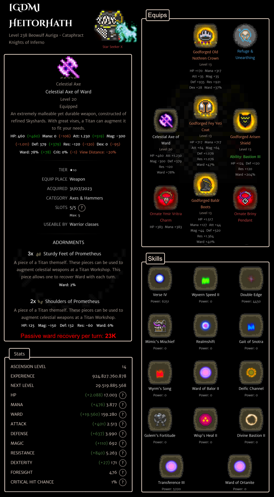

Quick route
Handler -> Wolf Tamer -> Spirit Tamer -> Dragoon / Valkyrie -> Grand Dragoon / Grand Valkyrie -> Freyr / Freyja -> Bahamut -> Beowulf / Bestla.
Beginning to end
Handler
Your first follower-focused class. It teaches you that the follower is part of the build, not background decoration.
Wolf Tamer, Spirit Tamer
These classes build follower identity and give you reasons to care about follower action rate, follower stats, and survival.
Dragoon / Valkyrie, Grand Dragoon / Grand Valkyrie
The Valhallan route starts coming online. You still need your own defenses because follower turns do not save you from every bad hit.
Freyr / Freyja, Bahamut, Beowulf / Bestla
This is the high-end follower lane. Pick followers for the fight, protect your own character, and avoid confusing pet scaling with Summoner scaling.
Celestial classes
Pet celestial progression branches from Beowulf / Bestla and is unlocked through Tower Shard spending. Verify current costs in-game before committing.
Beowulf Hydrus / Bestla Hydrus
The hybrid-power route. Hydrus moves some emphasis away from follower bonding and toward your own stats, so it suits players who want the Valhallan kit to feel less dependent on follower turns.
Beowulf Auriga / Bestla Auriga
The follower-bond route. Auriga is the natural pick when you want your follower to remain the centerpiece and you are building around frequent, meaningful follower actions.
Shard spending note
Pet celestial classes ask for a real plan: follower choice, gear, survivability, and tower goals all matter. Read the Towers of Olympia guide before spending Tower Shards.
Build variant: Beowulf Auriga Cataphract
This player-submitted snapshot shows a Level 238 Beowulf Auriga using the Cataphract specialization. The build is not a universal best-in-slot template; read it as a Ward-heavy reference for players who want Auriga follower play backed by very strong personal defenses.

Build idea
Stack Ward, use Cataphract durability, and let Beowulf Auriga's follower focus do work while the player survives. The screenshot calls out roughly 23K passive Ward recovery per turn, driven largely by the Celestial Axe of Ward setup and defensive gear.
Screenshot context: Level 238 Beowulf Auriga with Cataphract, ascension level 14, Refuge & Unearthing amity, Knights of Inferno kingdom, and 159,280 Ward shown. Treat those numbers as a snapshot, not a target every player should expect to match.
Equips and Codex entries
- Weapon: Celestial Axe. The screenshot shows a level 20 Celestial Axe of Ward. In this build, it is the main Ward engine and the platform for Titan augments.
- Weapon augments: Sturdy Feet of Prometheus x3 and Shoulders of Prometheus x2. The Feet add Ward recovery each turn; the Shoulders add Ward, HP, and defense.
- Head: Old Nothren Crown. This is a broad defensive head slot that also protects attack and magic power from being weakened.
- Torso: Fey Yeti Coat. This supports survival with defense, resistance, HP, mana, Ward, and raid ultimate damage reduction.
- Off-hand: Arisen Shield. The build uses it for heavy Ward and the Bastion III off-hand ability.
- Legs: Baldr Boots. These add HP, resistance, Ward, and status protection, all useful for staying alive while the follower works.
- Accessory: Ymir Vritra Charm. This is mainly for status safety, especially paralysis, stun, and petrification immunity.
- Accessory: Briny Pendant. This covers blight, poison, rot, and toxic immunity.
Follower: Arisen Spiritgarm
Arisen Spiritgarm is a T10 Ragnarok event animal follower. The Codex lists a spell rate of 12 and a 4% protect chance, with Great Meditation and the Fey elemental nukes in its skill list. Its Bestial Bond bonuses lean into bonded attack/magic and temporary magic buffs, which pairs naturally with Beowulf Auriga's follower-bond focus.
Skills shown and Codex entries
| Skill | Codex entry | What it is for |
|---|---|---|
| Verse IV | Codex | Hybrid attack/magic damage with a strong chance to temporarily lower enemy defense and resistance. |
| Wyvern Speed II | Codex | Setup buff that can raise dexterity, attack, and magic. |
| Double Edge | Codex | Physical damage option with self-damage risk; safer when Ward is strong. |
| Mimic's Mischief | Codex | Risky setup tool. The build's defenses help absorb bad rolls when using it. |
| Realmshift | Codex | Delayed extra-turn tool with a dexterity boost on return; the Codex notes it may need Avidity to function. |
| Gait of Snotra | Codex | Magic-leaning stance that trades physical power and defenses for more magic power. |
| Wyrm's Song | Codex | Crit, temporary attack, and temporary magic setup. |
| Ward of Balor II | Codex | Ward activation plus chances at elemental defenses. |
| Deific Channel | Codex | Major all-stat buff and Ward generation after a 3-turn setup. |
| Golem's Fortitude | Codex | Big defense and resistance buff at the cost of attack power. |
| Wisp's Heal II | Codex | Emergency HP recovery and common status cleanup. |
| Divine Bastion II | Codex | Large Ward recovery/activation and 100% damage absorption after a 3-turn setup. |
| Transference III | Codex | Non-elemental magic damage while recovering Ward. |
| Ward of Ortanite | Codex | Ward recovery/activation for 7 turns with 85% absorption. |
Stats shown
| Stat | Value |
|---|---|
| HP | 17,003 |
| Mana | 3,877 |
| Ward | 159,280 |
| Attack | 2,513 |
| Defense | 3,990 |
| Magic | 692 |
| Resistance | 5,263 |
| Dexterity | 171 |
| Foresight | 476 |
| Critical hit chance | 1% |
How to use this variant
- Use it as a durability blueprint. The important pattern is Ward stacking, defensive buffs, and a recovery-focused celestial weapon.
- Do not copy the gear blindly. Godforged gear, ascension, adornments, and amity make a huge difference.
- Keep the follower plan in mind. Auriga is still chosen for follower bonding, so survival gear should buy time for the follower to matter.
- Check current values. Tower augments, class balance, and item stats can change, so verify major shard or material spending in-game.
Side classes worth knowing
Warrior and hybrid side classes can help with survivability. Mage side classes can provide utility. Pet classes still need gear plans, not just a good follower.